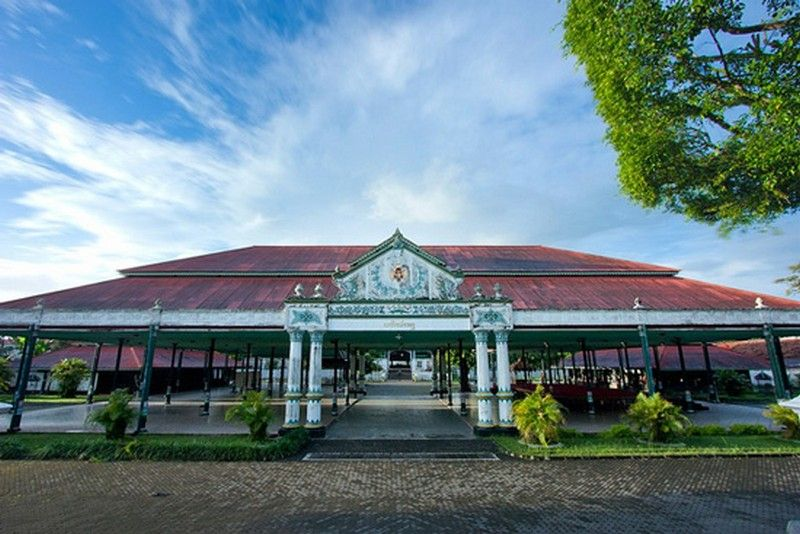
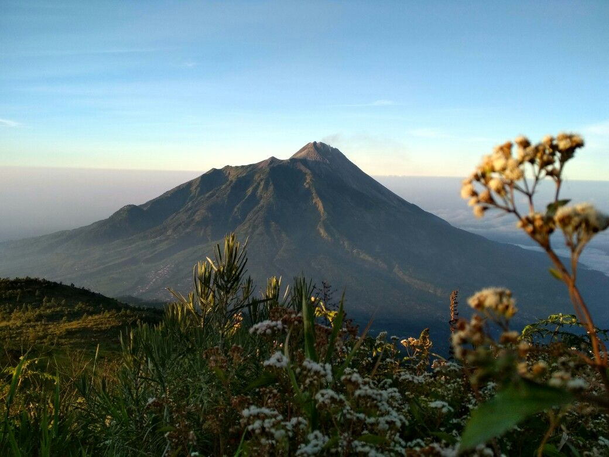
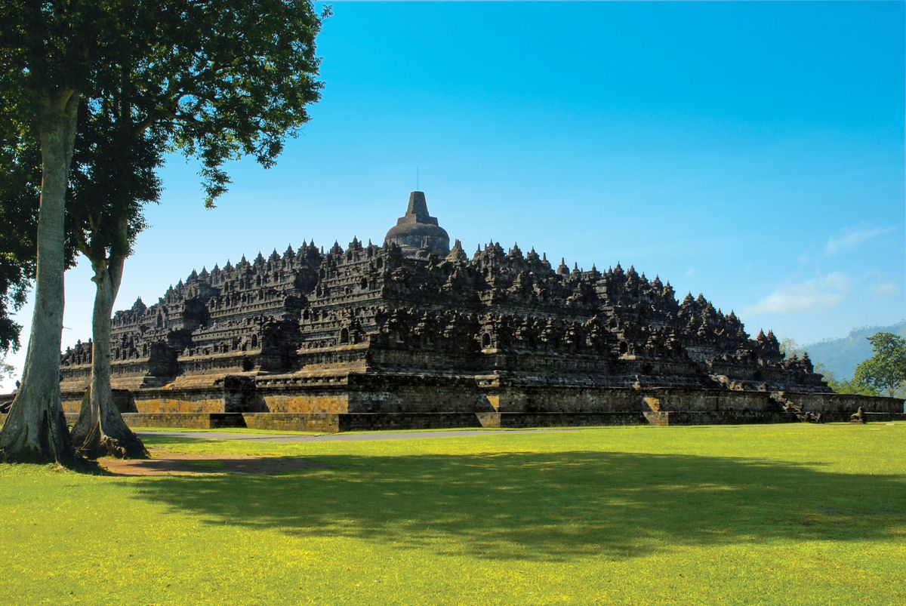
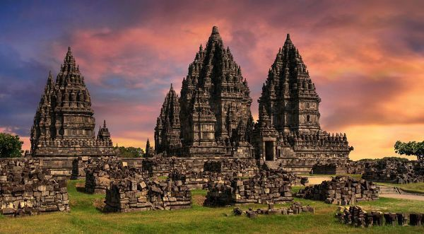
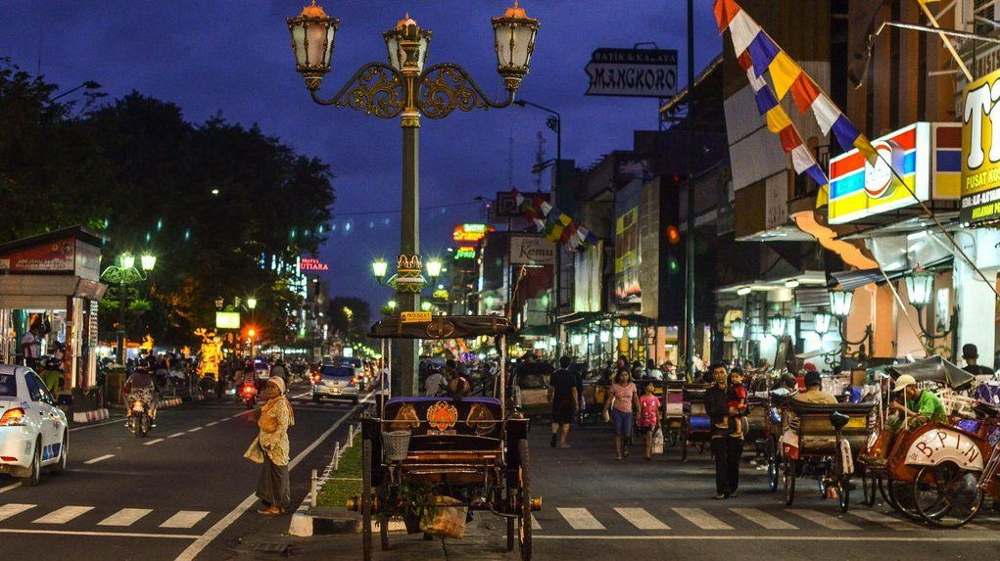

Kota budaya dan destinasi wisata populer di Indonesia
Sejarah

Yogyakarta atau Jogja adalah daerah istimewa dengan nilai sejarah
dan budaya tinggi. Keraton Yogyakarta menjadi pusat kebudayaan Jawa,
dan pada masa perjuangan kemerdekaan Jogja pernah menjadi ibu kota
Indonesia.
Hingga kini, Yogyakarta tetap mempertahankan statusnya sebagai
daerah istimewa yang dipimpin oleh Sultan. Kekhasan ini menjadikan
Yogyakarta unik dibandingkan daerah lain di Indonesia. Tradisi,
seni, dan nilai-nilai budaya Jawa masih sangat dijaga dan
dilestarikan.
Selain itu, sejarah panjang perjuangan rakyat Yogyakarta turut
memperkuat identitasnya sebagai kota perjuangan. Banyak peninggalan
bersejarah seperti benteng, museum, dan monumen yang menjadi saksi
bisu perjuangan bangsa Indonesia.
Geografis

Terletak di selatan Pulau Jawa, diapit Gunung Merapi di utara dan
Samudera Hindia di selatan. Kondisi ini membuat wilayahnya subur dan
kaya panorama alam.
Selain itu, wilayah Yogyakarta didominasi tanah vulkanik yang sangat
subur. Hal ini menjadikan daerah sekitar Sleman dan Bantul terkenal
sebagai pusat pertanian dan perkebunan. Kombinasi antara pegunungan,
dataran rendah, dan pantai menciptakan bentang alam yang sangat
beragam.
Iklim tropis dengan musim hujan dan kemarau yang jelas juga
menjadikan Yogyakarta sebagai wilayah yang nyaman untuk ditinggali.
Curah hujan yang tinggi membuat daerah ini kaya akan sumber air
sehingga cocok untuk pertanian.
Wisata Populer

Candi Borobudur – Warisan dunia UNESCO dan candi
Buddha terbesar di dunia.
Candi Borobudur berada di Magelang, tidak jauh dari Yogyakarta.
Kompleks candi megah ini menjadi salah satu tujuan utama wisatawan
domestik maupun mancanegara yang ingin belajar sejarah sekaligus
menikmati pemandangan alam sekitar.

Candi Prambanan – Candi Hindu megah dengan relief
dan arsitektur indah.
Candi Prambanan merupakan kompleks candi Hindu terbesar di
Indonesia. Relief-relief pada dindingnya menceritakan kisah Ramayana
yang hingga kini masih dipentaskan dalam bentuk Sendratari Ramayana
di kawasan candi.

Malioboro – Ikon belanja, kuliner, dan suasana
malam di Jogja.
Malioboro adalah pusat keramaian kota Yogyakarta. Wisatawan dapat
menemukan pedagang kaki lima, pusat perbelanjaan, hingga atraksi
seni jalanan. Di malam hari, suasana semakin ramai dengan lampu
jalan dan kuliner khas seperti angkringan.
Tugu Jogja
Tugu Jogja adalah salah satu landmark paling terkenal. Monumen ini
memiliki filosofi mendalam tentang persatuan manusia dengan Tuhan
serta menjadi ikon bagi wisatawan untuk berfoto ketika berkunjung ke
Yogyakarta.
Selain tempat-tempat terkenal, Yogyakarta juga memiliki desa wisata
dan destinasi alam yang menawarkan pengalaman berbeda, seperti Goa
Pindul, Pantai Parangtritis, hingga Hutan Pinus Mangunan.